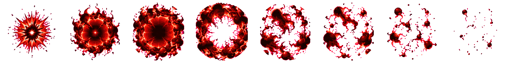

Naruto Skills Revamp · Batch 1
Two Naruto skills candidates remain for visual approval. Both were edited without new image-generation calls.
Approval requested; technical limits are disclosed. The strict character packer still withholds the atlas because it cannot detect a human head on the fully engulfed beasts. Per your decision, Claude records version-bound scaleManualQA after visual approval. No scale pass is claimed here. The v17 raw tail repair passes Astra review; overall anatomy, packed-scale and contact clearance remain on technical hold.
Already approved via Claude relay skills #4: beamFire v14 with its placement sidecar, and ui_ult_fg v04. The requested f0 claw-slam mapping and final packed/contact checks remain Claude integration work.
B1 · beamCharge v17 NO-CALL PIXEL EDIT

- f0/f2 tail seams were cleaned using f1 as the fan donor; the source image-call budget remains 3/3.
- Forked/detached remnants were removed and the rightmost tail follows an irregular pixel contour through its base. Pixels at y436 and below match v11.
- Four tails are visible in each pose; Astra confirms the main raw contour repair. A small inherited ear/neck alignment concern near x534/535 remains, especially f2 y342–360. The strict scale gate still needs Claude's version-bound scaleManualQA after visual approval.
A8 · fourTailsRoar v02 NO-CALL CIRCULAR MASK

- Hard circular mask keeps every frame inside a 236 px diameter centered in its 256 px cell; no pixels reach cell edges.
- Candidate HD pack produced eight cells in a 2048×256 atlas at scale x1.000. Measured maximum alpha radius is 117.99 px; 14 isolated specks removed.
- v02 is the current round-burst candidate. v01 remains preserved as source history; neither version is approved.

Audit and provenance
See the Astra audit, prior audit and generation-call and pixel-edit ledger. The strict full Naruto pack did not write the character atlas: both fully engulfed strips lack a detectable human head. The separate HD effect atlas did pack successfully. This review page is for the user's visual approval of beamCharge v17 and fourTailsRoar v02; the post-approval scale record remains pending with Claude.